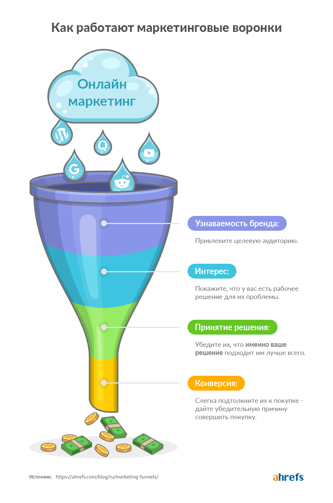

1. Контент-маркетинг — хорошо масштабируемая долгосрочная стратегия
Если вы направляете свои усилия на создание полезного “вечнозелёного” контента который люди ищут, он может со временем начать хорошо ранжироваться в Google по большому количеству ключевых слов. И постоянно генерировать рост поискового трафика. Как здесь:
И это касается не только блога. Как только мы начали вкладывать усилия и ресурсы в рост нашего YouTube канала, количество просмотров начало постоянно расти:
Благодаря тому, что весь этот трафик органический, вся наша маркетинговая команда может сделать небольшой перерыв и трафик продолжит идти. По крайней мере, какое-то время. Этого нельзя сказать о платных рекламных кампаниях, где трафик останавливается, как только вы перестаёте за него платить.
2. Контент-маркетинг помогает конвертировать потенциальных клиентов
Люди редко ищут сразу то что вы продаёте, кликают на ваш сайт и покупают.
Вместо этого они следуют по “пути покупателя”.
Сначала они узнают о вашем существовании. Дальше они узнают как вы можете помочь им решить их проблемы, почему ваше решение самое лучшее и, наконец, если вам повезёт, они становятся вашими клиентами.
Именно так работает маркетинговые воронки.

Далее, есть множество способов затянуть людей в вашу маркетинговую воронку и провести по ней, но контент-маркетинг — самый простой и самый эффективный.
Вот как он может работать на практике:
Скажем, Билли хочет получить больше трафика на свой, поэтому он ищет в Google “как привлекать больше трафика на сайт” и попадает на нашу статью.
Здесь он узнаёт о важности SEO для привлечения трафика прежде чем закроет вкладку и продолжит свой день.
Через несколько недель он кликнет на пост о SEO в Твиттере. В посте будет говориться о важности ссылок и будут рекомендовать бесплатный инструмент для проверки ссылок. Билли использует его чтобы посмотреть сколько у его сайта ссылок и сравнивает его с конкурентами.
Увидев насколько мало у него ссылок он будет искать на YouTube видео о построении ссылок и найдёт наше видео:
К этому моменту он уже увидел столько нашего контента, что решает зарегистрироваться на бесплатный период. И несмотря на то что он никогда не пользовался Ahrefs, он чувствует что неплохо в нём разбирается.
Убедившись в функциональности нашего инструмента во время бесплатного периода, он берёт месячную подписку.
Как видно из этого примера, контент-маркетинг сыграл ключевую роль в привлечении Билли в качестве клиента. Если бы у нас не было контента для каждого этапа его пути, скорее всего он бы никогда не подписался.
Узнайте как создавать контент для каждого этапа пути покупателя в этом посте.
3. Контент-маркетинг помогает улучшать эффективность других маркетинговых каналов
Без контента непросто использовать все современные маркетинговые каналы.
Например, давайте взглянем на профиль в соцсетях любого бренда. Вы часто увидите, что чаще всего они делятся постами в блоге и видео контентом.
То же касается и email маркетинга. Большинство рассылок существует для распространения нового контента. Такого как посты в блоге и видео.
Платная реклама — ещё один канал, который питается за счёт контента. Особенно на Facebook, где самые популярные форматы рекламы — это видео и посты.
И давайте не забывать про “сарафанное радио”, наверное самый мощный маркетинговый канал из всех. Если люди часто видят ваш контент в других маркетинговых каналах, скорее всего они им поделятся с друзьями и коллегами.
4. Контент-маркетинг часто дешевле в долгосрочной перспективе
Сравнительно с другими методами привлечения трафика, контент-маркетинга самый эффективный для привлечения целевого трафика. Например, наш блог ранжируется в Google по более чем 193 тысячам ключевых слов и привлекает около 451 тысяч посетителей в месяц из поиска.
Если бы мы привлекали этот трафик с помощью Google Ads, нам бы это стоило около 795 тысяч долларов в месяц и около 9.5 миллионов в год.
Учитывая что мы и близко не тратим столько денег на создание и оптимизацию контента, можно уверенно сказать что контент-маркетинг в долгосрочной перспективе оказался дешевле чем платная реклама.